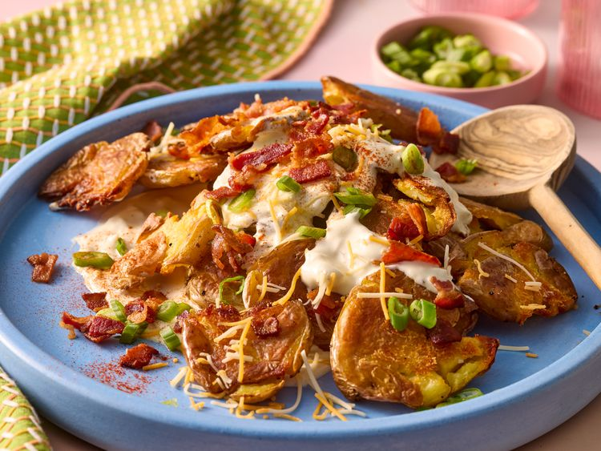

Mashed Potato Salad

Description
This loaded smashed potato salad is a delicioius side dish.
Smashed potates are crisp on the edges and creamy in the middle and
are paired with cheese, bacon, green onions, and a jazzed up sour cream mixture.
Ingredients
- 1 1/2 pounds potatoes
- 1/4 cup olive oil
- 1/2 teaspoon freshly ground black pepper
- 1/4 teaspoon salt
- 1/4 cup sour cream
- 2 cloves garlic, minced
- 2 teaspoons cider vinegar
- 1/2 teaspoon white sugar
- 1/4 cup shredded triple Cheddar cheese blend
- 4 slices bacon, crisp cooked and crumbled
- 2 tablespoons sliced green onions
- paprika to taste
Steps
- Gather all ingredients. Line a rimmed baking sheet with foil and
drizzle with 2 tablespoons olive oil.
- Place potatoes in a 3-quart saucepan and add enough water to cover potatoes by 2 inches.
Bring to a boil over high heat; reduce heat to medium. Simmer until tender,
12 to 15 minutes. Drain well and arrange in an even layer on the prepared baking sheet.
- Preheat the oven to 425 degrees F (220 degrees C).
- Using the bottom of a measuring cup or drinking glass,
smash each potato to 1/4- to 1/2-inch thickness, taking care not to fully break them apart.
Drizzle with 1 tablespoon olive oil and sprinkle with 1/4 teaspoon pepper, and salt.
- Roast potatoes until beginning to crisp on the bottoms, 25 to 30 minutes.
- Meanwhile, whisk together sour cream, remaining 1 tablespoon olive oil,
garlic, vinegar, sugar, and remaining 1/4 teaspoon pepper.
- Turn potatoes and continue roasting until bottoms are crispy,
about 15 minutes more.
- Spoon half of the sour cream mixture onto the center of a serving platter and
spread out to an even layer. Top with the crisp smashed potatoes, arranging them in a pile.
Evenly spoon the remaining sour cream mixture over the potatoes and top with
cheese, bacon, green onions, and a sprinkle of paprika.
Home Menu